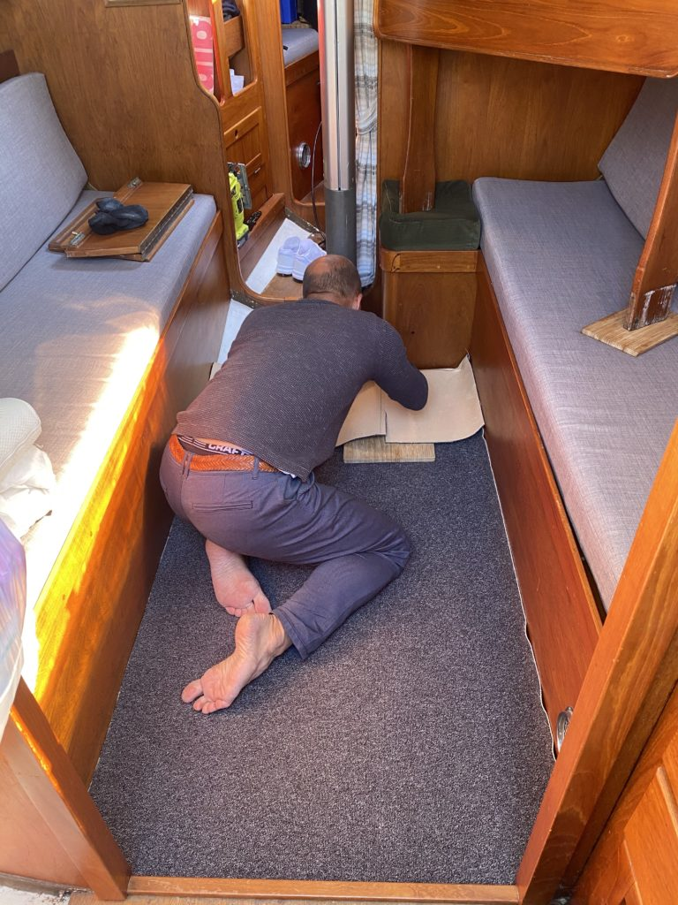
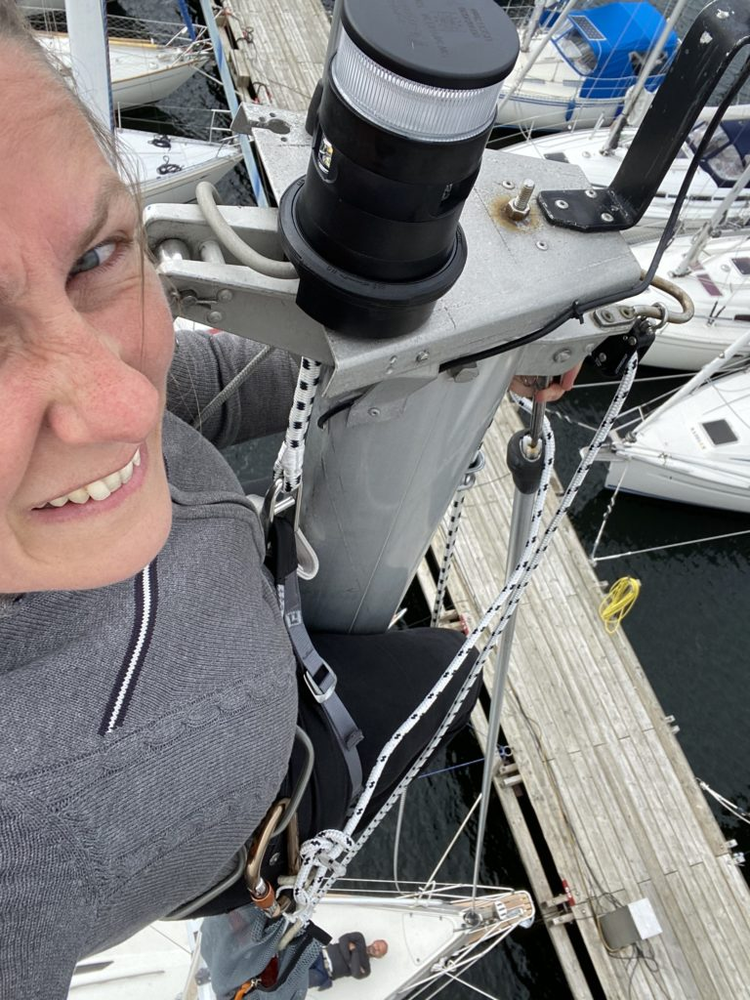
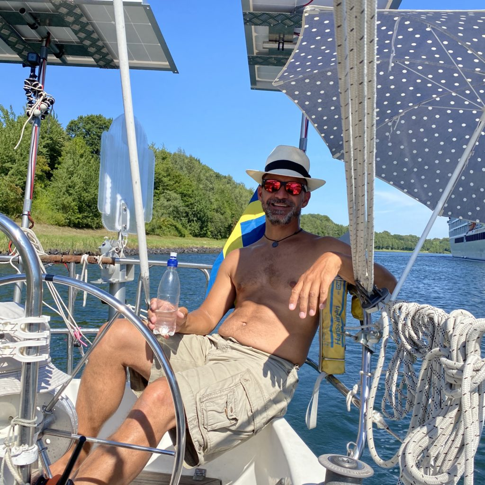
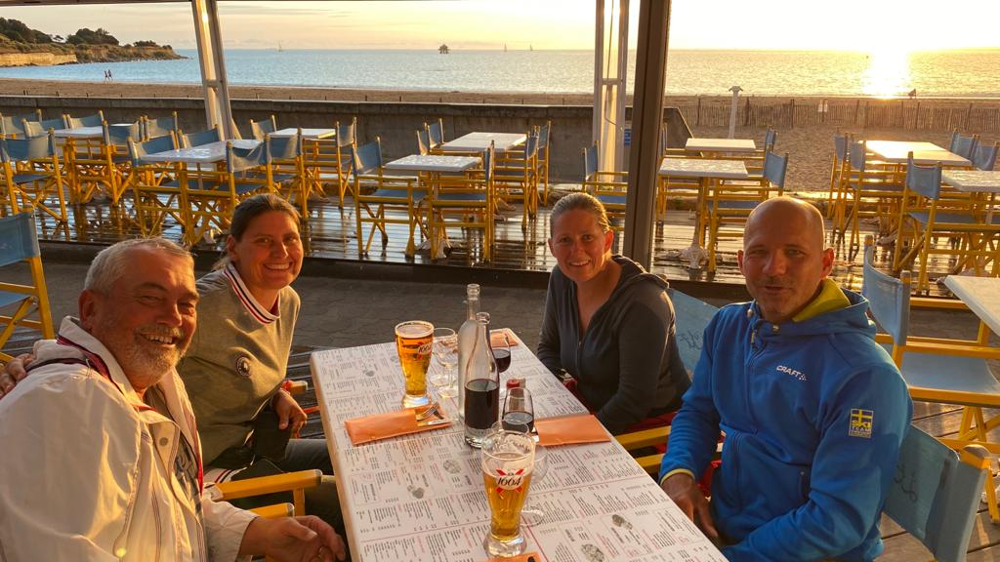
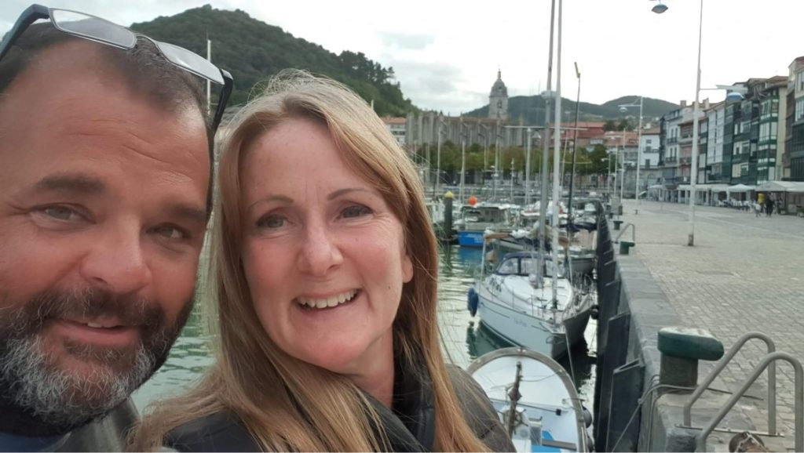
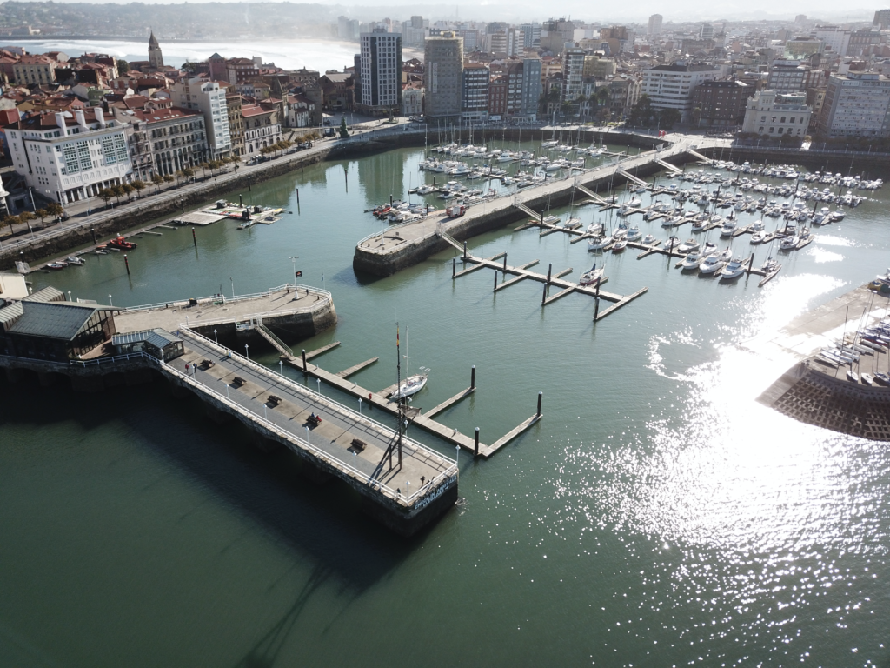

2024
Vår plan för 2024 är äntligen klar, efter många turer fram och tillbaks är vi äntligen klara. I alla fall med de stora dragen, de mindre tar vi som det komme...

Senast uppdaterad:
We have now been in Gijon for just over a month and a half and after a lot of discussion and indecisiveness we came to the conclusion that this was where we should stay for the winter.
One of the things that we have learnt since we started this trip, or maybe it is more correct to call it a lifestyle because a trip feels more like a vacation, is that one of the hardest things is to decide to stay in a place for more than just a few days. It should not be difficult but it is and we have spent quite a lot of time discussing why.
When we left Limhamn and Sweden we were eager to advance as fast as possible. In the beginning we didn’t even think of staying more than overnight and then keep going the next day. Before we left, the plan was to get down to southern Portugal or southern Spain to spend the winter there. We left the last day in July, about a month later than we first had planned, partly due to the uncertainty in Europe because of Covid-19 and partly because we still had some work on the boat to finish.

Boatwork – Tony is putting in a new carpet

Boatwork – Mia is installing a halyard for the spinnaker
The first milestone was to get to the Kiel canal and we didn’t feel any need to stop on the way to be tourists. After the Kiel canal every new country was a new milestone. The Netherlands, Belgium and then France. The coastline of France is really long so when we got to France it was not getting to the next country that drove us but rather getting as far south as possible. We had nice weather but we were still longing for the southern European warmth or at least getting somewhere where it would be warm enough to spend the winter.

The weather along the Kiel canal was really good
If we at least could get across the Bay of Biscay, then we could slow down a bit. The feeling was not really a stressful feeling but rather a wish to “get there” wherever “there” was. The mental picture of “there” was southern Portugal or Spain. I’m not sure exactly when that mental picture was changed but we had many discussions about why we wanted to get “there” and what will happen once we are “there” that we didn’t really had any good answers to. We both agreed that there was no reason to be in a hurry to get anywhere. Still it was so easy to get caught up in the feeling of having to move on to the next place.
In Roscoff, the evening before we had planned to cross the Bay of Biscay early next morning we went out to have dinner and buy a few last things we wanted for the crossing. We had a last look at the weather forecast and realized that we probably would have to motor more than 75 % of the distance over the bay. We really didn’t want to do that partly because we’ve had some trouble with the engine overheating that wasn’t solved yet and partly because it is noisy and uncomfortable. There and then we decided to go around on the inside of the bay instead. A decision that definitely delayed our arrival to more southern latitudes. But it still took about a week more before we started slowing down in our minds as well.
We were in Port Joinville on Ile d’yeu and had decided to leave in the evening to do an overnight sail to La Rochelle. When we cleaned up after having had dinner and was about to leave we looked at each other and none of us really felt like doing a night sail so we decided not to. The next day we rented bicycles and biked around the island, I think that was the first time we took the time to be tourists and it was a really nice little island.
On Ile d’yeu we meet another Swedish couple, Alf and Jessica on Taipan and in Bourgernay on the way to La Rochelle we met a German couple, Anja and Manfred on AnMa and we all stayed on the same pontoon in La Rochelle. Most people you meet are a little bit in a hurry because they have a leave of absence from work for a year and then they have to be back home again. This was not the case with Alf and Jessica or Anja and Manfred but we were all sort of in the same situation that this was our new life.

Dinner with Manfred and Anja from AnMa the last evening in La Rochelle

Alf and Jessica with Taipan in the background when they where in Lekeitio
It is always good and interesting to exchange experiences and plans with other sailors but sometimes it is also pretty confusing. Even if your situations look the same we all do this in slightly different ways and for slightly different reasons and the goal can be everything from not wanting to work 9 to 5 in an office to wanting to travel and see as many new places as possible and learn new languages or maybe just not being cold in the winter…
If you forget that your own reason might not be the same as the fellow sailor you are talking to it is really easy to let it affect your own plans sometimes consciously but most of the time unconsciously. Of course that is not always bad, sometimes you change your plans to get to a marina were your friends are just to meet them and hang out. But quite a few times we have made a decision to stay somewhere for a while and then when your friends move earlier than what you planned to do you start to question your decision. Maybe we should also move on, even if you don’t really have a good reason for it other than that you would get a step closer to “there”.
When we got to Gijon our German friends were already here and we stayed here together for almost two weeks before they moved on. We hadn’t really decided to stay for the winter then but we were sick and tired of motoring and our plan was to leave about four days later and go straight to A Coruña because according to the weather forecast it looked like we were going to be able to sail there. Since we came to Spain the last week of September it has been either too much wind or no wind at all which means that all the way from halfway to Hondarribia to Gijon which is about 300 nautical miles we have either gone by engine only or engine combined with one or two sails but no pure sailing.
Even if we had the plan to go to A Coruña we were still going back and forth about it a few times a day, especially since the weather forecast changed a bit to our disadvantage. We were quite happy in Gijon, the marina is situated in the middle of the old town and you can get everywhere you need by foot, the marina wifi is great and it is a really good place for a longer stay. One day we called our Swedish friends on Taipan to ask them about A Coruña because they hade been there for about two week and were still there. If they had decided to winter there then that would have been a good reason for us to get there as well. However their plan was to move on in a week or two but otherwise they had nothing but good to say about A Coruña. It really didn’t help us make a decision to stay or to leave but at least we had some more information.
Since it was in the beginning of November the days were quite short and the nights had started to get a bit colder. We weren’t too keen on doing a cold night sail but since the situation with Covid-19 had started getting worse all over Spain we didn’t want to risk getting stuck in a tiny village along the way either. Our German friends on AnMa reported that Ribadeo, about halfway to A Coruña was a great place but if we were to leave our plan was still to go straight to A Coruña. Later the same day that we spoke to Jessica on Taipan she called again to tell us that another German boat, Miss Sophie, that had arrived in A Coruña straight from Gijon had gotten a fine of 200€ per person on board for leaving Gijon because Gijon was in a lockdown. That was it, there and then we decided to stay in Gijon and the next day we paid for a month to start with.
This time of the year there is not a lot of visiting boats in Gijon and after a few days we were the only boat at the visitor’s pontoon and no new boats arrived for a few days and then we started to question our decision again. Even the customs guy seemed to think that we should leave. We met him in town and he recognized us, we asked him what he knew about the fine that Miss Sophie got and he didn’t know anything about it and he didn’t see a problem with us leaving even if both the city of Gijon was in a lockdown and also the region Asturias was in a lockdown. He meant that when we are on our boat we are in Sweden so then the lockdown rules doesn’t apply or at least he couldn’t see that there were any laws or rules against us leaving. In fact, he said that it would be better for us to go to Galicia, the next region, because they are not in a lockdown and not as infected with Covid-19 there.

Alone at the visitors pontoon in Gijon
It’s interesting and quite strange that it’s so easy to get affected of what the people around you say or do. It’s just as if the standard way to do this is to stay a day or two and absolutely no more than a week in a place, then you should be heading to the next place. The question is if it really is like that or if it’s just our twisted perception of how it should be done… Maybe we still need to stress down even more than we have done so far not to get affected of other people being in a hurry or having another agenda. It really shouldn’t be difficult at all to make a decision to stay a little longer in a place. We are in no hurry and the next place will still be there when we get there eventually. We heard about a crew from Sweden that wintered twice before they got into the Mediterranean, the first winter was spent in the Netherlands and the second somewhere in northern Spain. it’s a good contrast that we often bring up when we feel too affected by all the ones that just keep moving on in a “touch-and-go” kind of way. Our conscious conclusion is that when we move on from here we will rather stay a few days longer in a place and wait for good sailing weather than motoring to the next place in a hurry that isn’t real. Time will tell if we will be able to stick to that or if we once again will get caught in the pace of the people around us…